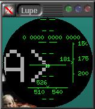
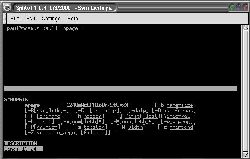

|
Здесь
представлена коллекция малоизвестных утилит, некоторые из которых я нахожу
весьма полезными в моей каждодневной работе. Я могу гарантировать, что
большинство людей никогда не слышали о них. O.K. - они конечно не совсем
секретные , в конце концов они свободно доступны в сети, но они
заслуживают большего внимания.
Даже когда вы ищите
приложения, которые работали бы как 'xsnap' или 'xclip' их
не так-то просто найти. Обнаружить утилиты вроде 'showbook' и
'splitvt' - это сделать настоящее открытие мирового масштаба.
- xsnap
- xclip
- showbook.pl
- number.pl
- splitvt
- WordNet
- Комбинации
клавиш и прочие "приключения"
xsnap
написанный
Clauss Strauch из Carnegie Melon
University и другими разработчиками.
После многолетнего использования 'Snap!', перейдя на Линукс, я искал
ему замену и тут и там. Нет, xsnap не обладает OCR возможностями, которые
были частью 'Snap!', но он все равно весьма полезен.
Xsnap - это небольшое приложение, которое снимает скриншоты. Большое
дело. Существует множество программ, которые делают тоже самое. Разница
состоит в том, что xsnap позволяет вам захватывать произвольные области
экрана (включая целые окна или экраны) и он работает быстро.
Когда вы запустите xsnap ваш курсор мыши изменится,
превратившись в угол; просто поместите курсор где нужно и 'растяните'
прямоугольник охватывающий область экрана, которую вы хотите захватить.
Вот и все. Нажмите 'p' или 'w' в результирующем окне, чтобы сохранить
пронумерованный скриншот в вашей домашней директории.
Это звучит не слишком впечатляюще, но когда вы хотите отослать по
электронной почте кусочек изображения, или сделать небольшую 'липкую'
заметку для себя, в то время как вы заняты чтением веб сайта, это то что
вам нужно. На самом деле снятие скриншотов запущенных приложений, это
самое малое, для чего вы можете использовать xsnap. Быстрое создание
простых 'липких' заметок документов, сообщений электронной почты и man
страниц, для использования в течении нескольких минут, вот где xsnap
предстает во всей красе.
На самом деле, можете поверить мне на слово, xsnap потрясающе
полезен, особенно когда привязан к горячей клавише вроде 'print screen'
(для чего она вам еще нужна?). На самом деле, xsnap просто не используется
по настоящему, если не назначен на глобальную горячую клавишу.
К сожалению он сохраняет свои файлы в виде 'xpm'. Они очень
большие
Как всегда, мы можем написать обходной скрипт для исправления таких
упущений. Просто сделаем скрипт, который будет преобразовывать файл на
лету. Вот пример скрипта, который назначен у меня на горячую клавишу: #!/bin/bash
# xsnap-jpg. Запускает xsnap, конвертирует в jpg и загружает electric eyes.
xsnap -stdout | xpmtoppm | cjpeg -quality 75 >~/snap.jpg;ee ~/snap.jpg
Чтобы избавить вас от лишнего набора, вот текстовая версия. Затем введите 'chmod 755
имя_файла' для загруженного файла, чтобы сделать его исполнимым. Это будет
функционировать как и xsnap исключая то, что файлы будут в формате
jpeg и вы сможете сделать с ними все что может ee - к тому же вы не
будете захламлять вашу домашнюю директорию нумерованными файлами.
'-quality 75' это опция по умолчанию для cjpeg. Измените '75' на
меньшее или большее число, чтобы регулировать размер/качество, как вам
нужно.
Я хочу упомянуть, что есть один небольшой дополнительных шаг для
компиляции xsnap. Вы обнаружите, что он поставляется без
работающего makefile или скрипта configure. Чтобы создать makefile введите
'xmkmf' (x make makefile). Затем действуйте как обычно. 
Пока вы скачиваете xsnap, на той же самой странице можно
обнаружить Lupe - очень
приятный увеличитель, с некоторыми дополнениями, касающимися цветов и
размещения (плюс он имеет 'клевый' дисплей в стиле 'heads-up' ).
xclip
от Kim
Saunders
Xclip это очень простое приложение. Почему оно было неизвестно
пользователям Линукс до сих пор - остается вне моего понимания.
Все просто, оно позволяет вам размещать то, что вы хотите в буфере
обмена. Точка.
Простой пример. Предположим, вы хотите послать вашему другу листинг
директории; нет проблем. Просто введите "ls | xclip" в ближайшей консоли и
затем щелчком средней клавиши вставьте его в ваш e-mail. На самом деле
стандартный вывод любой программы можно перенаправить по каналу (pipe) в
xclip: 'whois', 'showbook.pl' или любой другой.
В комбинации со скриптом, предназначенным для захвата выделенного
текста, он становится еще более полезен. Предположим, вы только что ввели
не отсортированный список, но вы хотите, чтобы он был отсортирован по
алфавиту. Выделите список мышкой, нажмите, скажем alt-shift-S и затем
щелчком средней кнопки вставьте уже отсортированный список ! Этот прием
можно использовать чтобы делать самые разнообразные вещи: суммировать
столбец цифр, делать блоки комментариев в стиле баннера, быстрые заметки
....
Вот скрипт на python, который использует
библиотеку wxWindows чтобы
делать все вышеперечисленное. Просто назначьте его на различные горячие
клавиши, используя соответствующий ключ командной строки (т.е.
'clipmanip.py -c' чтобы создавать блоки комментариев).
showbook.pl
написанный Guido Socher
Этот небольшой драгоценный камень совершенно неоценим, если вы имеет
множество закладок. showbook.pl обрабатывает файл закладок Netscape
и возвращает URL которые он там находит. На самом деле, даже не смотря на
то, что я не использую Netscape несколько месяцев, я регулярно экспортирую
мои закладки из Konqueror, просто чтобы я мог продолжать пользоваться им !
(примечание: Konqueror немного искажает синтаксис, поэтому вам нужно
запустить Netscape один раз, и явно сохранить закладки, чтобы
отсортировать все как надо.)
Вот пример поиска при помощи showbook.pl: [paul@oremus paul]$ showbook.pl wxwin
== Misc ==
<A HREF="http://web.ukonline.co.uk/julian.smart/wxwin/">wxWindows</A>
Да, я использовал его для того чтобы получить URL, который был мне
нужен, для wxWindows :-)
number.pl
от Landon Curt Noll. Email: "number-mail at asthe dot com"
Приготовьтесь к унижению : Этот человек имеет больше достоинств (игра
слов: degree - градус или достоинство) чем термометр :-). Резюме любого
человека будет выглядеть просто убого в сравнении с резюме Mr. Noll.
number.pl это наиболее полное скриптовое решение проблемы "цифры в
слова", которое я когда либо видел. Конечно, вы не будете использовать его
каждый день (если не прицепите его в вашему списку чеков), но это
настолько красивый кусочек perl, что я просто обязан включить его. Я
обычно бросаю написание на самом большом чеке, который может написать
покупатель в моем представлении. Но не Mr. Noll: [paul@oremus paul]$ number.pl 123456789123456789.12
one hundred twenty three quadrillion,
four hundred fifty six trillion,
seven hundred eighty nine billion,
one hundred twenty three million,
four hundred fifty six thousand,
seven hundred eighty nine
point
one
two
Надо будет её взломать :)
splitvt
by Sam Lantinga 
Splitvt дает вам две консоли в одной, путем горизонтального
разделения консоли. Если вы щелкните на картинке справа, то вы увидите как
это полезно для просмотра man страниц, в то время как вы составляете
командную строку. 'Control-W' используется для того чтобы переходить между
окнами туда и обратно.
Splitvt прекрасно работает везде где я пробовал. Везде от
настоящей консоли, до konsole построенной в виде табулированного
блокнота. Без всяких проблем, очень полезна.
Princeton's WordNet.
Email: Wordnet-email
Любой кто использует английский язык должен иметь копию WordNet
на своей машине. WordNet это словарь, не программа проверки
правописания, а настоящий "честный и добродетельный" словарь с значениями
слов объясняемыми в контексте.
Я должен предупредить вас, что это примерно 10 мегабайтная загрузка, но
он того стоит, и вам придется загрузить его всего 1 раз. Вот пример вывода
команды 'wn' (исполнимая программа, поставляемая с WordNet) для
слова 'date':
Overview of noun date
The noun date has 8 senses (first 8 from tagged texts)
1. date, day of the month -- (the specified day of the month; "what is the date
today?")
2. date -- (a particular day specified as the time something will happen; "the
date of the election is set by law")
3. date, appointment, engagement -- (a meeting arranged in advance; "she asked
how to avoid kissing at the end of a date")
4. date -- (a particular but unspecified point in time; "they hoped to get
together at an early date")
5. date -- (the present; "they are up to date"; "we haven't heard from them to
date")
6. date, escort -- (a participant in a date; "his date never stopped talking")
7. date -- (the particular year (usually according to the Gregorian calendar)
that an event occurred; "he tried to memorize all the dates for his history
class")
8. date -- (sweet edible fruit of the date palm with a single long woody seed)
Overview of verb date
The verb date has 5 senses (first 3 from tagged texts)
1. date -- (go on a date with; "Tonight she is dating a former high school
sweetheart")
2. date, date stamp -- (stamp with a date, as of a postmark; "The package is
dated November 24")
3. date -- (assign a date to; determine the (probable) date of; "Scientists
often cannot date precisely archeological or prehistorical findings")
4. go steady, go out, date, see -- (date regularly; have a steady relationship
with; "Did you know that she is seeing her psychiatrist?" "He is dating his
former wife again!")
5. date -- (provide with a dateline; mark with a date; "She wrote the letter on
Monday but she dated it Saturday so as not to reveal that she procrastinated")
Уфф! Весьма полно, не правда-ли? Приведенный выше вывод на самом деле
усечен!
WordNet поставляется с tcl/tk фронтендом, который на самом деле никогда
у меня не функционировал. Он кажется хочет старую версию tcl/tk. Я обычно
вызываю его при помощи горячей клавиши (control-shift-E) при помощи вот
этого небольшого скрипта , который использует gdialog
для ввода и вывода. Я думаю что gdialog поставляется с большей
частью дистрибутивов. Xdialog тоже
весьма неплох и является подходящей заменой.
В том же духе, и чтобы показать как легко адаптировать скрипт, WORDS for LINUX
(i86) латинский словарь, который вы можете использовать в той-же
манере. Скрипт лежит здесь. На самом деле мне вероятно нужно
сделать его копию, которая использовала бы showbook.pl... Теперь,
почему бы нам не завершить нашу полку с книгами тезаурусом ?
gThe придется точно к месту. Вы можете найти его здесь. Sampo Niskanen проделал прекрасную
работу, используя свободно доступный тезаурус. Я хотел бы иметь
графический интерфейс, который в тоже время принимал бы аргументы из
командной строки. Нужно не забыть написать и спросить не собирается ли он
заняться этим.
Некоторые могут удивиться, почему я не упомянул как конкретно
назначать программу на горячую клавишу, в самом начале. Ответ очень прост:
Я не знаю.
Так точно, я не знаю как вы можете сделать это, потому-что я
не знаю какой десктоп вы используете. Похоже что все они используют разные
методы - если он у них вообще есть. Приведенное ниже не является
доскональным исследованием, но я провел пару часов изучая это. Если вам
известен метод, который будет работать глобально, с любым десктопом , то я
очень прошу послать мне email. Мои результаты вне двух
десктопов были ужасны. Я пробовал xmodmap, но, несмотря на то что я ничего
не испортил, я ничего и не достиг ... Если у вас еще утро, то
прислушайтесь к этому мучительному крику о помощи :).
IceWM
Как вы могли заметить из скриншотов, я использовал IceWM в это время. Тема на скриншотах -
это моя личная смесь темы "blue plastic" и "Photon" (мне всегда хотелось
иметь цифровые часы, которые загорались бы когда вы щелкните на них). На
самом деле я жил в IceWM в течении нескольких месяцев. Это очень красивый,
легкий десктоп и я нашел его легко настраиваемым и стабильным. Если вы
используете его без IcePref (by
David Mortensen) и iceme (by Dirk Moebius) вы многое теряете. Обе
утилиты написаны на python, так что вы можете делать с
ними все что захотите. Первое что вам нужно сделать после запуска
iceme это использовать его, чтобы добавить его
самого в меню. Теперь вы можете запустить iceme
когда захотите. Другое приимущество заключается в том, что
iceme может вызывать IcePref, так что вы
можете убить двух зайцев сразу. iceme позволяет столь
легко создавать горячие клавиши, что я даже не буду описывать процедуру.
Обоим парням нужно поставить по пиву и шведской булочке на ближайшей
конвенции.
Sawfish/Gnome Увы 1, это была
одна из моих неудачных попыток. Я не знаю, что я делаю не так.
Конфигуратор Sawfish имеет пару подходящих кандидатов в (обширном) списке,
но я не смог назначить xsnap на клавишу и заставить его
вызываться. Я просто знаю что это должно быть манифест моей
собственной глупости :-). Как я написал выше: Помогите...
KDE
В KDE версий 1.x было небольшое приложение khotkeys. У
него был хороший пользовательский интерфейс, но надо было проделать
небольшую работу, чтобы заставить его печатать некоторые символы (такие
как длинный адрес email, одним нажатием). Начиная с 2.0+ часть этой
функциональности пропала, т.к. оно еще не было переписано. Хотя, все
описанное выше можно проделать если вы создадите пункты меню для каждого
скрипта и используете kmenu, чтобы назначить ему клавишу.
Все просто.
Просто, если вы не используете Mandrake. Не поймите меня неправильно.
Как дистрибутив Mandrake великолепен. Я использую только его, начиная с
версии 6.2. Проблема состоит в том, что он не включает даже
kmenu и необходимые ему библиотеки. Учитывая то, что
khotkeys еще не были портированы в 2.x, это резонно, но
это оставляет нас 'без рук' когда нам нужны горячие клавиши !
Не бойтесь. Всегда есть путь ! В KDE 2..x не нужно явно запускать
khotkeys он всегда на месте. Если вы вообще не хотите
загружать kmenu и вы используете Mandrake, то вот все что
вам нужно сделать:
Загрузите файл "/home/yourdir/.kde/share/config/khotkeysrc" в ваш
любимый редактор. В самом верху есть строка указывающая количество секций,
просто увеличьте эту цифру на единицу, когда хотите добавить секцию. Вы
можете создавать пункты для вещей, которые указывают на существующий пункт
меню, или же вы просто можете создать новый. Вот пример для обоих случаев:
Секция, которая указывает на пункт меню: [Section1]
MenuEntry=true
Name=K Menu - Graphics/xsnap-jpg.desktop
Run=Reference/xsnap-jpg.desktop
Shortcut=F12
Секция, которая указывает просто на командную строку: [Section15]
MenuEntry=false
Name=calc
Run=gtapecalc
Shortcut=Ctrl+1
После того, как вы добавили свои изменения в файл khotkeysrc
вы можете приказать khotkeys перезагрузить конфигурацию,
используя dcop. Это 'InterProcess COmmunication Protocol'
(Протокол взаимодействия между процессами) или IPC. Это значит, что вы
можете 'разговаривать' с программами во время их работы и указывать им что
необходимо сделать. Введите 'kdcop' в xterm и посмотрите что доступно. Вот
командная строка, которую необходимо запустить, чтобы
khotkeys перечитал свою конфигурацию:
dcop khotkeys khotkeys reread_configuration
Есть еще две особенности KDE, которые я должен упомянуть. Одна касается
вашего окружения, а другая буфера обмена.
Во первых, ваше меню, когда вы запускаете KDE в Mandrake. Mandrake
имеет собственный, специальный скрипт 'startkde'. Есть хорошая причина:
это позволяет согласованно распределить пункты меню (для всех оконных
менеджеров и десктопов). В то же время, это означает, что когда
вы заходите в X используя KDE, скрипт затрет дополнительные пункты меню,
созданные при помощи kmenu или вручную. Решение: уберите
разрешение на запись для всех - даже для вас самих - для директорий и
пунктов, которые вы добавили самостоятельно в '.kde/share/applnk-mdk'. Это
вызовет несколько ошибок, которые будут записываться в ваш файл
'.xsession-errors', но это сохранит вашу работу в безопасности.
Во вторых, Mandrake версия скрипта 'startkde' (я совершенно не понимая
почему) не распознает ваше окружение. Будучи запущенным из
kdm, графического менеджера входа в систему, вы
заканчиваете с десктопом, которые не знает о путях и псевдонимах
установленных вами. Самое быстрое решение этой проблемы - модификация
скрипта 'startkde', который лежит в /usr/bin. Просто добавьте эти строки
где нибудь в начале:
source $HOME/.bashrc
source
$HOME/.bash_profile
Так он будет считывать ваше окружение, как
будто вы стартовали при помощи 'startx' из консоли.
Я мог запросто пропустить ваш любимый десктоп здесь (я ведь сделал
обзор только трех из зиллионов). Пожалуйста напишите мне как работает ваш.
Итак это все?Ну почти.
Это почти все, но я был бы невнимателен, еслибы не поговорил немного о
буфере обмена.
'Windows'/'OS2' имеют 256 буферов обмена как и 'Amiga'. В 'X' есть тоже
самое - плюс. Под 'X' существуют те же, статические, 256 буферов обмена
плюс то что называется 'Primary Selection' (Основное выделение).
Это текст, который выделен на данный момент. 'Secondary Selection'
(Вторичное выделение) относиться к обычным 256 буферам. В общем, все что
выделено на данный момент, может быть 'вставлено' нажатием средней клавиши
мыши. Очень приятно.
К сожалению, вещи могут стать более запутанными и вы полностью во
власти тулкита, относительно того как это будет работать. Я заметил, что
под KDE2x что-то крадет фокус выделения. Я пытался выключать
klipper, но это не дало результата. На практике, это
делает скрипты 'clipmanip' бесполезными, т.к. фокус 'крадут' до того как
вы сможете вставить обработанное содержимое буфера обмена.
Не бойтесь отважные души! Мы можем выиграть в этой игре. Если мы не
может найти общее решение, мы должны просто немного доработать вещи,
обходным путем. Нам не сможет помешать небольшое различие в формате буфера
обмена. Исключая 'clipmanip -n' мы кажется потерпели поражение, но не
стоит пока списывать нас со счетов...
Обратимся за помощью к нашему Верному Редактору. Я конечно осознаю, что
предлагать конкретный это почти тоже что выбирать за вас ваше
нижнее бельё, но все таки выслушайте меня.
Мы можем использовать теже идеи, но 'защитить их от атаки' десктопа,
делая все внутри нашего редактора. Все что нам нужно это 'дружелюбный
редактор'. Как говорят 'geeks' 'emacs' это круто, т.к. он написан на lisp
и может быть расширен при помощи скриптов на lisp. Теперь, мы, кто врядли
может претендовать на звание Geeks, можем использовать Glimmer от Chris Phelps.
Glimmer на самом деле не
написан на python (это C++), но он настолько плотно интегрирован, что вряд
ли кто либо заметит это. Я думаю проект Scintilla и
wxwindows позволяют создать полностью написанное на
python решение хоть сегодня. Я использовал оба из них и могу сказать, что
они просто изумительны. Вы можете написать на скрипте, все что захотите.
Все что вам нужно, это написать скрипт на python и положить его в
'/home/yourname/.glimmer/scripts', и он будет добавлен в меню 'Scripts'.
Основываясь на том, что было у меня в дистрибутиве, я предлагаю
эквиваленты вышеописанных скриптов для glimmer здесь.
Они все похожи сами на себя и им легко следовать. Я многое изучил с тех
пор как написал их, но я мужественно, скрепя зубы, оставляю их в том виде,
в котором они были в то время. (Я изучил python пару месяцев назад,
python/wxwindows это самая большая радость, которая у меня была за годы
написания скриптов).
Т.к. вы находитесь здесь уже долго, я дам вам еще одну вещь:
baudline. Это приложение невероятно мощно, для всего,
чего мы простые смертные не применяли-бы его, я практически не упоминал
его. Baudline это Король
свободно доступных аудио инструментов. Я послал свои благодарности автору,
но я был немного обеспокоен на счет того, что он может не одобрить
использование Baudline в моих руках: для ответа по
телефону. Я был не прав. С того времени, Erik Olson, добавил
непосредственную поддержку для rmd и mp3. Если вам нужно
редактировать/анализировать звук, можете больше не искать.
Я надеюсь, что хотя бы вызвал у вас интерес к некоторым из этих утилит.
Исключая WordNet, все они небольшого размера. Получите удовольствие !
Примечание 1
Если у Jerry Pournelle есть авторское право на это слово, извиняюсь прямо
сейчас.
Paul EvansPaul Evans любит все, что касается электроники и
компьютеров в частности. Он достаточно стар, чтобы помнить, как он работал
на Altair 8080A в свою юность. Он и двое его детей живут в дебрях Северной
Британской Колумбии; они не лесорубы, но с ними все в порядке.
|